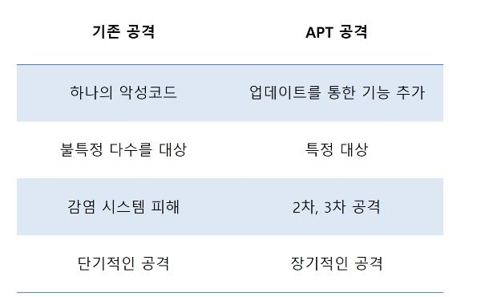
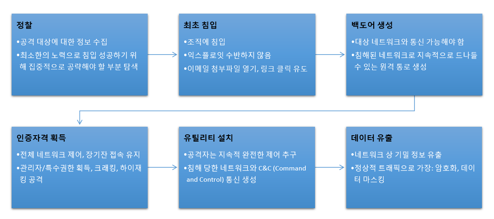

생생보안정보통
생생보안정보통APT(Advanced Persistent Threat) 공격의 정의
- 특정 대상에 대한 정보를 다양한 방법을 동원해 수집하고
- 향후 원하는 시기에 원하는 만큼의 정보를 유출할 수 있도록
- 장기간 접근을 유지하는 공격 기법

APT 공격 동향
- 인터넷 인프라 발전으로 인터넷을 통한 악성코드 공격 급증
- 사회공학적기법, 고도의 심리전으로 발전
- 산업과 국가 기간 시설 공격 시도 증가
- 비실행형 악성코드 활용
- 전자서명을 도용한 악성코드 증가
- 최근악성코드는보안솔루션탐지회피기술사용
APT 공격 방식
- 사회공학적 기법을 사용한 공격, 시스템 취약점 공격, 저장매체를 통한 공격
- 공격 후 악성코드에 감염시킨 후 정보수집
- C&C서버를 통해 시스템 통제
- 피해자 시스템에 연결된 네트워크 내의 다른 시스템 감염
- 추가 감염된 시스템 C&C 서버 접속해 정보 수집
APT 공격 절차
APT 공격 특징
- 실행파일(exe)외 문서 형태의 악성코드를 활용한 공격 증가
- 공격에 사용되는 기술을 특정할 수 없어서 탐지 어려움
√ 백신에 탐지되지 않는 파턴을 가진 악성코드
√ 제로데이 취약점
√ 공격 대상에 대한 충분한 정보 수집 및 사회 공학적 기법 사용
- APT 공격대응
√ 100% 예방불가능
√ 취약점 보완, 보안 솔루션 활용 모니터링, 직원 대상 보안 교육
<- 다 읽었으면